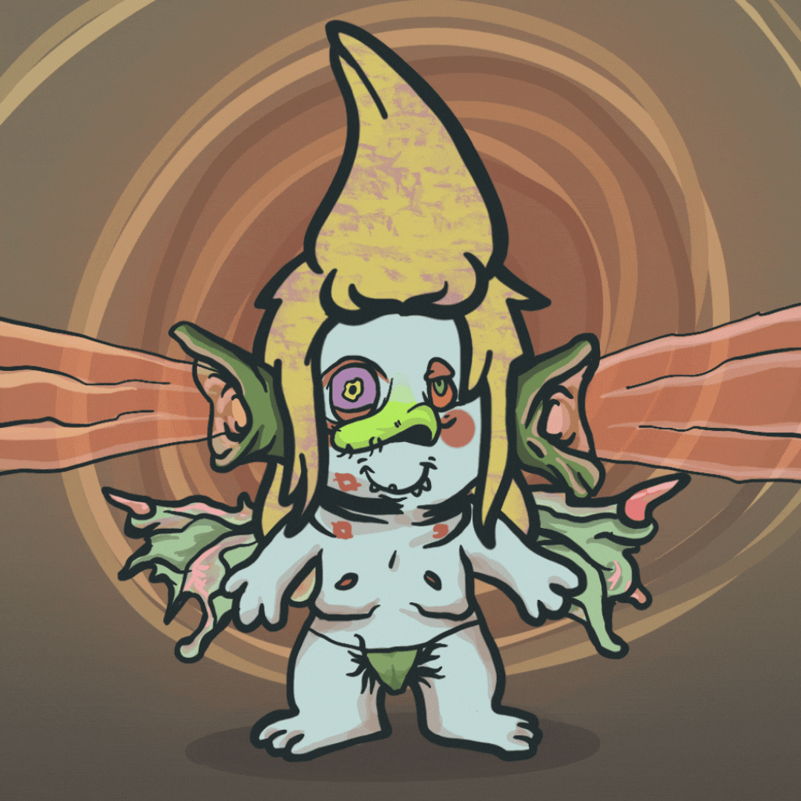
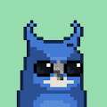
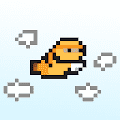
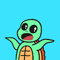
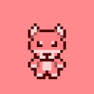
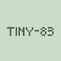
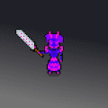
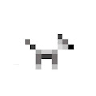
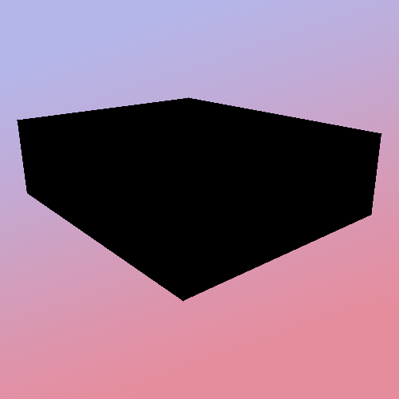

Timelapsed Official 延时摄影是艺术及其社会经济增长的视觉表现。 Timelapse 将是一个全免费的薄荷糖，总库存量为 4,000，每 tx 的最大薄荷糖为 3。3 个延时摄影和 3 个超延时摄影
TIMEPieces x Robotos TIMEPieces 于 2021 年 9 月推出，是我们品牌向 web3 的演变。该系列基于 TIME 的年度人物，包括 10 件独特作品的版本，其中包含 5 幅 Pablo Stanley 对“年度机器人”的诠释。 该系列是对 TIMEPieces
Tiny Aliens (POLY) 免费薄荷是活的等等？！ 这怎么发生的？？？ 我们的一些可爱的小外星人跳上了 0mnichain 并逃离了外星人幼儿园。他们留下了一张纸条？？ 小外星人 (POLY)NFT - 常见问题 (FAQ) ▶
tiny cats (poly) cc0 全链 nft 在 7 个不同的链上铸造，并且可以在每个链之间转移 过去 7 天内没有出售任何小型猫科动物（保利）。 小猫 (poly) NFT - 常见问题 (FAQ) ▶ 什么是小猫（poly
Tiny Chimps Tiny Chimps NFT 在过去 7 天内售出 110 次。Tiny Chimps的总销售额为 13.64 万美元。一个Tiny ChimpsNFT 的平均价格为 124 美元。有 3,419 个Tiny Chimps所有者，总
tiny dinos (poly) tiny dinos (poly) NFT 在过去 7 天内售出 3 次。tiny dinos (poly) 的总销售额为 390.82 美元。一个小恐龙（poly）NFT 的平均价格为 130.3 美元。有 230 个小恐龙 (poly) 所有者，总共拥有
Tiny Dinos Ai Tiny Dinos Ai 由 FATBOIGOMEZ 使用人工智能和原始的 Tiny Dino 创建！ Mint on Contract 现在在网站和 Mint Dapp 发布之前：https://tinyurl.com/yc5wa6px 如果您手动铸
Tiny Dinos Collection Tiny Dinos Collection 是 Polygon 区块链上的 NFT。 根据定义的稀有系统，这 5,000 只小恐龙中的每一个都具有使它们独一无二的属性。过去 7 天没有售出 Tiny Dinos 系列。 在这个独特的系列
tiny dogs eth 8,088 只小狗在以太坊区块链上寻找主人。 – 网站 | 不和谐——游戏进行中。 没有路线图。 只是可爱的小狗。 过去 7 天没有售出官方迷你狗。 官方 Tiny Dogs NFT - 常见问题
tiny dogs eth - old 8,088 只小狗在以太坊区块链上寻找主人。 – 网站 | 不和谐——游戏进行中。 没有路线图。 只是可爱的小狗。 过去 7 天没有售出官方迷你狗。 官方 Tiny Dogs NFT - 常见问题
tiny girls (poly) 500 个小女孩生活在以以太坊为家乡的多边形上 过去 7 天没有售出小女孩 (poly)。 tiny Girls (poly) NFT - 常见问题 (FAQ) ▶ 什么是小女孩（poly）？ tiny Girls (poly) 是一个 NFT (Non-fungible
tiny girls v2 (eth) 9999 个女孩 cc0 全链 nft 在 4 个不同的链上铸造并且可以在每个链之间转移这是固定和更新的合约随着越来越多的人从 V1 迁移，我们将看到 NFT 的总量上升所有未来的实
 Tiny Jamet Town Tiny Jamet Town NFT - 常见问题（FAQ） ▶ 什么是小贾梅特镇？ Tiny Jamet Town 是一个 NFT（非同质代币）集合。存储在区块链上的数字艺术品集合。 ▶ Tiny Jamet Town 代币有多少？ 总
tiny MOAR (poly) 过去 7 天没有卖出任何微小的 MOAR (poly)。 cc0 全链小猴子 nft 在 7 个不同的链上铸造，并可在每个链之间转移。 tiny MOAR (poly) NFT - 常见问题 (FAQ) ▶ 什么是微小的 MOA
 tiny moonbirds 进入独家 Alpha 组并可兑换商品。 过去 7 天没有出售任何小型月鸟。我们的免费薄荷糖现已上线。 前 200 枚薄荷糖免费，之后 0.0025 枚薄荷糖。 最多 3 个免费薄荷 https://etherscan.io/address/0xeba336f01918736ba58c91e8d2c1ece569fd0cf9 #NFT #NFTs #NFTCommunity
 Tiny Ninjas (eth) 过去 7 天内没有售出 Tiny Ninjas (eth)。 很小，但很强大。 10,000 个 cc0 小忍者中的 1 个在 7 个不同的链中铸造。 Tiny Ninjas (eth) NFT - 常见问题（FAQ） ▶ 什么是 Tiny Ninjas (eth
 Tiny Turtles NFT 收集 10,000 只可爱的海龟！ 这些海龟热爱环境，希望您加入我们的海滩清洁工作。 来 https://www.tinyturtlesnft.com 拯救海龟吧 过去 7 天没有售出 Tiny Turtles NFT。 为您提供有关 NFT 空间的最新信息 Tiny
Tiny Winged Turtlez Tiny Winged Turtlez 是多达 5,000 个完全链上的集合，在铸币时随机生成，带有翅膀的小乌龟。 Tiny Winged Turtlez 是多达 5,000 个完全链上 NFT 的集合。没有链下 API 或资产存储。除了这个网站，T
 Tiny Wolf From NWP 过去 7 天没有售出来自 NWP 的 Tiny Wolf。 3,333 只小狼之一在 ETH 区块链上铸币 实用程序： ✅ 每个 NFT 都将作为我们主要收藏的铸币通行证（将在白名单之前铸币）✅ 拥
 TINY-83 5,555 个可以绘制任何函数的图形计算器朋友，100% 上链。 这个项目是 Vine 联合创始人 dom 分享的一个想法的实现。过去 7 天没有 TINY-83 售出。 TINY-83 NFT - 常见问题（FAQ
tiny-girls-poly 9999 个女孩 cc0 全链 nft 在 4 个不同的链上铸造并且可以在每个链之间转移这是固定和更新的合约随着越来越多的人从 V1 迁移，我们将看到 NFT 的总量上升所有未来的实
 TinyDaemons on Ethereum TinyDaemons 是 10K 数字哨兵的集合，用于在 Omnichain 空间中传播恶魔腐败。 BitDaemon 文明出生于数百万光年外的未知家园，长期以来一直沉浸在我们无法理解的知识中。其中最强大的先
 TinyDoge (ETH) 过去 7 天内没有售出 TinyDoge (ETH)。 小总督| cc0 全链 nft 推特：[https ://twitter.com/tinydogenft] TinyDoge (ETH) NFT - 常见问题 (FAQ) ▶ 什么是 TinyDoge (ETH)？ TinyDoge (ETH) 是一个 NFT (Non-fungible token) 集合。存储在区块
 TMR : Timmy's ROOM Timmy’s ROOM NFT 在过去 7 天内售出 2 次。Timmy’s ROOM NFT 的总销售额为 23.05 美元。Timmy’s ROOM NFT 的平均价格为 11.5 美元。有 54 位Tim
To The Moon101 只是为了好玩…. Fück Utility、fück Discord 和 Twitter fück 路线图。我们没有这一切，但我们会把你带到月球上。 ▶ 什么是 To The Mo
tokenproof Founder's Circle tokenproof 意味着保护、访问和将 NFT 带入生活 消除连接您的钱包只是为了证明您的代币所有权的风险。 高枕无忧地访问您甚至不知道存在的事件、服务和其他令牌门。 NFT
Tokens Equal Text 彩色 Vaporwave 文本的独特 ERC-998 组合，编码为 ERC-721 令牌 ID。 “Tokens Equal Text”通过一种不可拥有的美学流派批判性地循环了 Rare Art 的所有权驱动。 Tokens Equal Text”
Tokens of Trust 信任统计的令牌 创建于 6 个月前 100 代币供应 0% 费用 过去 7 天内没有出售任何信任代币。 这些是名为 Contagion 的 p2e 游戏的支持代币（赞助商代币）！！！ 请不要尝试直接
TOKIMEKI LIFE 时事生活 创建者 10 个月前 10代供电 10% 费用 过去 7 TOKIMEKI LIFE。 “tokimeki”tokoroten tokoroten tokoroten 的意思还是很清楚的。 . 这样一个不为人知的仙
Tokyo Trees 东京树木统计 创建于 7 个月前 375 代币供应 7.5% 费用 过去 7 天内没有出售东京树。 Tokyo Trees 是 1,111 个日本盆景树 NFT 的集合 - 独特的数字收藏品，可让其所有者获得会员专属
TOKYOLUV // EDITIONS TOKYOLUV // 版本统计 创建于 4 个月前 4 代币供应 5% 费用 过去 7 天内没有 TOKYOLUV // 版本售出。 我的版本是根据我自己的智能合约铸造的。 ▶ 什么是 TOKYOLUV // EDITIONS？ TOKYOLUV
Tom Sachs: Rocket Factory - Mars Rocks 汤姆萨克斯：火箭工厂 - 火星岩石统计 创建于 3 个月前 15 代币供应 OpenSea 验证集合 10% 费用 10,991 名 Discord 成员 17,861 位推特关注者 Tom Sachs：Rocket Factory - Mars Rocks NFT 在过去
TOMATOZ 您是否知道赢得 6 位数彩票的概率是 13,983,816 分之一，Tomatoz - Heheland 是 9999 Tomatoz 的集合，旨在为错过的人提供更好的机会拥有 Potatoz (Memeland)。 我们用 Mint 的
TOMI MUSIC TOMI MUSIC 统计 创建于 8 个月前 50 代币供应 10% 费用 过去 7 天没有售出 TOMI MUSIC。超级挖掘这个项目的艺术品和一个巨大的粉丝.说再见。 这是一个时代的结束。 强
Tomoe Gozen Official NFT 8000 名女战士灵感来自平家物语和一个名叫 Tomoe Gozen 的女人的传奇故事。 Tomoe Gozen（巴御前）是日本历史上平安时代晚期的一位女武士。她在源平战争期间服务于
Toon Town Loons ToonTown 是一个以社区为中心的 NFT 收藏生态系统，具有从 100 多个手绘特征随机生成的独特且高质量的艺术品。ToonTown 是（元）世界，可收藏的这些生物，即
Toonanderthals NFT 迈出第一步，但已经是直背。采取下一个进化步骤并重生到 Web3。#primalscoming, Toonanderthals NFT 于 2022 年 8 月 17 日首次铸造。 我们目前正在追踪流通
ToonKnights 卡通骑士统计 创建于 2 个月前 1,072 代币供应 3% 费用 ToonKnights NFT 在过去 7 天内售出 3 次。ToonKnights 的总销售额为 7.52 美元。一个 ToonKnights NFT 的平均价格为 2.5 美元。有
ToonPals Pass 共有 6,969 个 ToonPals 在以太坊区块链上启动以寻找新的 Pals！拥有 ToonPal 可让您访问 ToonPals 应用程序中的独家 AR 体验。在完成 50% 的公共铸币后，我们将推出一个 AR 创作者工具
Toons Official Toons 官方统计 创建于 4 个月前 4,447 代币供应 OpenSea 验证集合 10% 费用 Toons 官方 NFT 在过去 7 天内售出 41 次。Toons Official 的总销售额为 732.44 美元。Toons Official NFT 的平均价格为 17.9
Top Frogs Genesis 顶级青蛙 Top Frogs 是一个集合，其中包含 +230 种最精美艺术的手绘特征，这些特征生成在 500 个 Genesis Top Frogs 的集合中，它们将在以太坊区块链上生存和呼吸。TF Genesis 是 500 只青
Top Traders Pass 顶级交易者通行证统计 创建于 3 个月前 4,760 代币供应 2% 费用 过去 7 天没有售出顶级交易者通行证。 铸币现场：https ://mint.toptraders.life 顶级交易者名单, 顶级交易者终身通行
TopCatBeachClub 顶级猫海滩俱乐部统计 创建于 11 个月前 6,882 代币供应 5% 费用 7,076 名 Discord 成员 Top Cat Beach Club NFT 在过去 7 天内售出 9 次。Top Cat Beach Club 的总销售额为 363.19 美元。Top Cat Beach Club NFT 的


 是一个 NFT (Non-fungible token) 集合。存储在区块链上的数字艺术品集合。")


，然后全部抽奖给 Tomatoz Army")